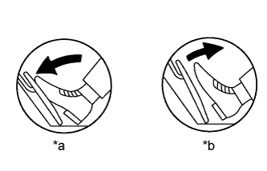

DTC P2120 Throttle / Pedal Position Sensor / Switch "D" Circuit |
DTC P2122 Throttle / Pedal Position Sensor / Switch "D" Circuit Low Input |
DTC P2123 Throttle / Pedal Position Sensor / Switch "D" Circuit High Input |
DTC P2125 Throttle / Pedal Position Sensor / Switch "E" Circuit |
DTC P2127 Throttle / Pedal Position Sensor / Switch "E" Circuit Low Input |
DTC P2128 Throttle / Pedal Position Sensor / Switch "E" Circuit High Input |
DTC P2138 Throttle / Pedal Position Sensor / Switch "D" / "E" Voltage Correlation |
| DTC No. | DTC Detection Condition | Trouble Area |
| P2120 | VPA fluctuates rapidly beyond the upper and lower malfunction thresholds for 0.5 seconds or more (1 trip detection logic). |
|
| P2122 | VPA is 0.4 V or less for 0.5 seconds or more when the accelerator pedal is fully released (1 trip detection logic). |
|
| P2123 | VPA is 4.8 V or higher for 2.0 seconds or more (1 trip detection logic). |
|
| P2125 | VPA2 fluctuates rapidly beyond the upper and lower malfunction thresholds for 0.5 seconds or more (1 trip detection logic). |
|
| P2127 | VPA2 is 1.2 V or less for 0.5 seconds or more when the accelerator pedal is fully released (1 trip detection logic). |
|
| P2128 | Conditions (a) and (b) continue for 2.0 seconds or more (1 trip detection logic): (a) VPA2 is 4.8 V or higher. (b) VPA is between 0.4 V and 3.45 V. |
|
| P2138 | Condition (a) or (b) continues for 2.0 seconds or more (1 trip detection logic): (a) Difference between VPA and VPA2 is 0.02 V or less. (b) VPA is 0.4 V or less and VPA2 is 1.2 V or less. |
|
| Trouble Area | Accel Sensor Out No. 1 When accelerator pedal Released | Accel Sensor Out No. 2 When accelerator pedal Released | Accel Sensor Out No. 1 When accelerator pedal Depressed | Accel Sensor Out No. 2 When accelerator pedal Depressed |
| VCP circuit open | 0 to 0.2 V | 0 to 0.2 V | 0 to 0.2 V | 0 to 0.2 V |
| Open or ground short in VPA circuit | 0 to 0.2 V | 1.2 to 2.0 V | 0 to 0.2 V | 3.4 to 4.7 V |
| Open or ground short in VPA2 circuit | 0.5 to 1.1 V | 0 to 0.2 V | 2.6 to 4.5 V | 0 to 0.2 V |
| EPA circuit open | 4.5 to 5.0 V | 4.5 to 5.0 V | 4.5 to 5.0 V | 4.5 to 5.0 V |
| Normal condition | 0.5 to 1.1 V | 1.2 to 2.0 V | 2.6 to 4.5 V | 3.4 to 4.7 V |
| Required Sensors/Components (Main) | Accelerator pedal position sensor assembly |
| Frequency of Operation | Continuous |
| VPA voltage | 0.4 to 4.8 V |
| VPA2 voltage | 1.2 to 4.8 V |
| Difference between VPA and VPA2 voltages | More than 0.02 V |
| Tester Display | Description |
| NORMAL |
|
| ABNORMAL |
|
| INCOMPLETE |
|
| UNKNOWN |
|

| 1.READ VALUE USING INTELLIGENT TESTER (ACCELERATOR PEDAL POSITION SENSOR) |
|  |
Connect the intelligent tester to the DLC3.
Turn the engine switch on (IG).
Turn the tester on.
Enter the following menus: Powertrain / Engine and ECT / Data List / All Data / Accel Sensor Out No. 1 and Accel Sensor Out No. 2.
Read the value displayed on the tester.
| Accelerator Pedal Operation | Accel Sensor Out No. 1 | Accel Sensor Out No. 2 | Difference between Accel Sensor Out No. 1 and Accel Sensor Out No. 2 |
| Released | 0.5 to 1.1 V | 1.2 to 2.0 V | More than 0.02 V |
| Depressed | 2.6 to 4.5 V | 3.4 to 4.7 V |
| *a | Depressed |
| *b | Released |
|
| ||||
|
| ||||
| 2.CHECK HARNESS AND CONNECTOR (ACCELERATOR PEDAL POSITION SENSOR - ECM) |
Disconnect the accelerator pedal position sensor connector.
Disconnect the ECM connector.
Measure the resistance according to the value(s) in the table below.
| Tester Connection | Condition | Specified Condition |
| A16-6 (VPA) - G45-6 (VPA) | Always | Below 1 Ω |
| A16-5 (EPA) - G45-3 (EPA) | Always | Below 1 Ω |
| A16-4 (VCPA) - G45-4 (VCPA) | Always | Below 1 Ω |
| A16-3 (VPA2) - G45-5 (VPA2) | Always | Below 1 Ω |
| A16-2 (EPA2) - G45-1 (EPA2) | Always | Below 1 Ω |
| A16-1 (VCP2) - G45-2 (VCP2) | Always | Below 1 Ω |
| A16-6 (VPA) or G45-6 (VPA) - Body ground | Always | 10 kΩ or higher |
| A16-5 (EPA) or G45-3 (EPA) - Body ground | Always | 10 kΩ or higher |
| A16-4 (VCPA) or G45-4 (VCPA) - Body ground | Always | 10 kΩ or higher |
| A16-3 (VPA2) or G45-5 (VPA2) - Body ground | Always | 10 kΩ or higher |
| A16-2 (EPA2) or G45-1 (EPA2) - Body ground | Always | 10 kΩ or higher |
| A16-1 (VCP2) or G45-2 (VCP2) - Body ground | Always | 10 kΩ or higher |
|
| ||||
| OK | |
| 3.INSPECT ECM (VCPA AND VCP2 VOLTAGE) |
Disconnect the accelerator pedal position sensor connector.
Turn the engine switch on (IG).
Measure the voltage according to the value(s) in the table below.
| Tester Connection | Switch Condition | Specified Condition |
| A16-4 (VCPA) - A16-5 (EPA) | Engine switch on (IG) | 4.5 to 5.5 V |
| A16-1 (VCP2) - A16-2 (EPA2) | Engine switch on (IG) | 4.5 to 5.5 V |
| *a | Front view of wire harness connector (to Accelerator Pedal Position Sensor Assembly) |
|
| ||||
| OK | |
| 4.REPLACE ACCELERATOR PEDAL POSITION SENSOR ASSEMBLY |
Replace the accelerator pedal position sensor assembly (Click here).
| NEXT | |
| 5.CHECK WHETHER DTC OUTPUT RECURS (ACCELERATOR PEDAL POSITION SENSOR DTCS) |
Connect the intelligent tester to the DLC3.
Turn the engine switch on (IG).
Turn the tester on.
Clear DTCs (Click here).
Drive the vehicle in accordance with the driving pattern described in Confirmation Driving Pattern.
Read DTCs.
| Result | Proceed to |
| P2120, P2122, P2123, P2125, P2127, P2128 and/or P2138 is output | A |
| No DTC is output | B |
|
| ||||
| A | ||
| ||